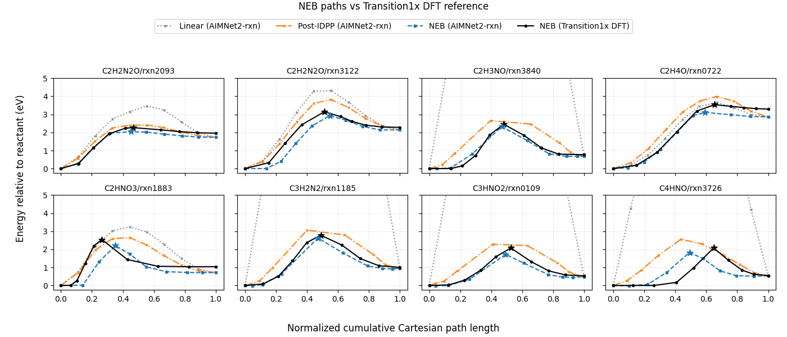

Note
Go to the end to download the full example code.
Batched NEB with AIMNet2-rxn#
Nudged elastic band (NEB) finds the minimum-energy path — and therefore the
transition-state estimate — between a reactant and a product. It represents
the path as an ordered band of molecular structures called images. This example
uses the NEB API to optimize eight reaction
paths together on a GPU. Grouping every image in one
Batch lets the model evaluate the paths in parallel.
The endpoint data include eight reactions spanning seven molecular formulas, selected from the official Transition1x v4 HDF5 release. The atomic numbers and coordinates are unchanged from the source data; positions are in angstrom. The data are distributed under the Transition1x MIT license.
Each path starts with only a reactant and product structure.
interpolate_paths() creates a ten-image linear
band between them, then IDPPModel relaxes
the interior images to provide a better initial path for NEB.
After IDPP initialization, aimnet2-rxn supplies the physical energies and
forces for a two-stage, climbing-image NEB calculation using the
improved-tangent method. Per-path diagnostics are written to neb.csv during
optimization. The optimized AIMNet2-rxn bands are then compared with reference NEB bands
optimized using DFT.
LBFGS can also be used for both IDPP and
physical-model NEB by passing optimizer=LBFGS to each NEB instance.
Dataset DOI: https://doi.org/10.6084/m9.figshare.19614657.v4
Reference: Schreiner, M. et al., “Transition1x - a dataset for building generalizable reactive machine learning potentials,” Scientific Data 9, 779 (2022), https://doi.org/10.1038/s41597-022-01870-w.
Run on a single CUDA 12 GPU through uv:
uv run --extra cu12 --extra aimnet python examples/advanced/11_batched_neb.py
For CUDA 13, replace --extra cu12 with --extra cu13.
The default method is improved tangent. Set method = "dneb" below to try
the custom doubly nudged force equation. The example writes
neb.csv and neb_energy_profiles.png. Set
NVALCHEMI_SHOW_INITIAL_PATHS=0 to omit the linear and post-IDPP curves and
skip their additional model evaluations.
The full plotted workflow runs in about 40–70 seconds on a single NVIDIA L4 GPU.
from __future__ import annotations
import csv
import json
import os
import sys
from collections import OrderedDict
from pathlib import Path
from typing import Any
import numpy as np
import torch
from aimnet.calculators import AIMNet2Calculator
from torch import nn
from nvalchemi._typing import ModelOutputs
from nvalchemi.data import AtomicData, Batch
from nvalchemi.dynamics.mep import (
NEB,
ClimbingImageConfig,
IDPPModel,
NEBMethod,
interpolate_paths,
prepare_idpp_targets,
)
from nvalchemi.models.base import BaseModelMixin, ModelConfig
if __package__:
from ._dneb_method import dneb_effective_force
else:
from _dneb_method import dneb_effective_force
Load the reactant and product endpoints#
Each NEB path connects two endpoint images: a reactant structure and a product
structure. The endpoint file provides this pair for each reaction. Every
structure is loaded as AtomicData. The reactants are
collected into one Batch and the products into
another. Graph i in the two batches therefore defines path i.
device = torch.device("cuda" if torch.cuda.is_available() else "cpu")
example_dir = Path(sys.argv[0]).resolve().parent
endpoints_path = example_dir / "batched_neb_endpoints" / "endpoints.json"
endpoints_data = json.loads(endpoints_path.read_text())
records = endpoints_data["paths"]
reaction_ids = [record["reaction_id"] for record in records]
def endpoint(record: dict[str, Any], name: str) -> AtomicData:
"""Construct one toolkit endpoint from an endpoint record."""
positions = torch.tensor(record[f"{name}_positions"], dtype=torch.float32)
return AtomicData(
positions=positions,
atomic_numbers=torch.tensor(record["atomic_numbers"], dtype=torch.long),
charge=torch.tensor([[record["charge"]]], dtype=torch.float32),
)
initial: Batch = Batch.from_data_list(
[endpoint(record, "reactant") for record in records],
device=device,
)
final: Batch = Batch.from_data_list(
[endpoint(record, "product") for record in records],
device=device,
)
print(f"Loaded {len(reaction_ids)} paths from {endpoints_path.name}")
print(f"Reaction IDs: {reaction_ids}")
print(f"Initial batch: {initial.num_graphs} graphs, {initial.num_nodes} atoms")
Loaded 8 paths from endpoints.json
Reaction IDs: ['C2H2N2O/rxn2093', 'C2H2N2O/rxn3122', 'C2H3NO/rxn3840', 'C2H4O/rxn0722', 'C2HNO3/rxn1883', 'C3H2N2/rxn1185', 'C3HNO2/rxn0109', 'C4HNO/rxn3726']
Initial batch: 8 graphs, 56 atoms
Interpolate and initialize the paths#
NEB optimization needs an initial band connecting each pair of endpoints.
interpolate_paths() constructs these bands.
It pairs graph i in the reactant batch with graph i in the product
batch and linearly interpolates NUM_IMAGES structures, including both
endpoints.
Linear interpolation can place atoms unphysically close together, so IDPP then relaxes the bands with a geometric pair-distance objective. This step does not require loading or evaluating an MLIP model.
The paths are represented together in one Batch.
Each image is an AtomicData graph, and
group_layout collects each ordered sequence of images into one path. Here
the batch contains 80 graphs arranged as eight paths of ten images. The NEB
engine later uses the same grouping to apply path operations independently
while evaluating all images together.
def initialize_dynamics_fields(batch: Batch) -> None:
"""Initialize the state required when a path enters an optimizer."""
batch.energy = torch.zeros(
batch.num_graphs,
1,
dtype=batch.positions.dtype,
device=batch.device,
)
batch.forces = torch.zeros_like(batch.positions)
batch.velocities = torch.zeros_like(batch.positions)
NUM_IMAGES = 10
linear_band: Batch = interpolate_paths(initial, final, NUM_IMAGES)
idpp_band: Batch = prepare_idpp_targets(linear_band.clone())
initialize_dynamics_fields(idpp_band)
print(f"Images per path: {idpp_band.group_layout.num_graphs_per_group.tolist()}")
print(f"Total image graphs: {idpp_band.num_graphs}")
# IDPP regularizes the initial interpolation without MLIP model evaluation.
idpp = NEB(
model=IDPPModel(),
fmax=0.1,
n_steps=100,
)
idpp_band = idpp.run(idpp_band)
# In this one-stage workflow, status ``1`` means every path met the IDPP force threshold;
# status ``0`` means it did not before reaching the optimization step limit of ``n_steps``.
if not bool(torch.all(idpp_band.status == 1)):
raise RuntimeError(f"IDPP did not converge within {idpp.n_steps} steps")
print(f"IDPP converged for all paths (fmax <= {idpp.fmax} eV/angstrom)")
Images per path: [10, 10, 10, 10, 10, 10, 10, 10]
Total image graphs: 80
IDPP converged for all paths (fmax <= 0.1 eV/angstrom)
Load the model#
The AIMNet2rxnWrapper below is constructed around
aimnet.calculators.AIMNet2Calculator and exposes the toolkit model
interface required by NEB. It loads the complete aimnet2-rxn potential,
including the Coulomb and D3 contributions selected by the checkpoint.
The existing AIMNet2Wrapper instead wraps
the raw neural network and disables those calculator-managed contributions so
they can be composed explicitly with toolkit models. Calling the calculator
directly preserves them for this example.
class AIMNet2rxnWrapper(nn.Module, BaseModelMixin):
"""Expose the full AIMNet2-rxn calculator through the toolkit model API."""
def __init__(
self,
device: torch.device,
*,
compile_model: bool = False,
) -> None:
"""Initialize the AIMNet2-rxn adapter."""
super().__init__()
self.calculator = AIMNet2Calculator(
model="aimnet2-rxn",
device=str(device),
compile_model=compile_model,
train=False,
)
self.model = self.calculator.model
self.model_config = ModelConfig(
outputs=frozenset({"energy", "forces"}),
required_inputs=frozenset({"charge"}),
supports_pbc=False,
needs_pbc=False,
active_outputs={"energy", "forces"},
)
@property
def embedding_shapes(self) -> dict[str, tuple[int, ...]]:
"""Return no embedding shapes because this adapter exposes no embeddings."""
return {}
def compute_embeddings(
self, data: AtomicData | Batch, **kwargs: Any
) -> AtomicData | Batch:
"""Raise because this example adapter does not expose embeddings."""
raise NotImplementedError("AIMNet2rxnWrapper does not expose embeddings")
def forward(self, data: AtomicData | Batch, **kwargs: Any) -> ModelOutputs:
"""Evaluate full AIMNet2-rxn energies and forces for a molecular batch."""
if isinstance(data, AtomicData):
data = Batch.from_data_list([data])
charge = getattr(data, "charge", None)
if charge is None:
charge = torch.zeros(data.num_graphs, 1, device=data.device)
output = self.calculator(
{
"coord": data.positions,
"numbers": data.atomic_numbers,
"charge": charge.squeeze(-1),
"mol_idx": data.batch_idx,
},
forces=True,
)
energy = output["energy"]
if energy.ndim == 1:
energy = energy.unsqueeze(-1)
return OrderedDict(energy=energy, forces=output["forces"])
model = AIMNet2rxnWrapper(device).eval()
/home/kelvin/Repos/nvalchemi-toolkit.worktrees/release-0.3.0-docs/.venv/lib/python3.13/site-packages/aimnet/calculators/calculator.py:492: UserWarning: AIMNet2Calculator instances from different families have been constructed in this process: ['rxn', 'wb97m-d3']. Energy targets and reference conventions differ across families (e.g. rxn uses a learned shifted-electronic scale, while wb97m-d3 and b973c-d3 use different DFT targets). Do not mix or compare energies across families.
self._maybe_warn_family_mix((metadata or {}).get("family") if metadata else None)
Run the NEB#
Start the AIMNet2-rxn NEB optimization from the IDPP-relaxed band. For each interior image, NEB combines the model force perpendicular to the path with a spring force parallel to the path. This allows the band to relax toward the minimum-energy path while maintaining reasonable spacing between images.
By default, method=”improved_tangent” uses the Henkelman–Jónsson tangent estimate. Along monotonic sections of the path, the tangent points toward the higher-energy neighboring image. Near extrema, the forward and backward directions are weighted by their energy differences. This improves path stability and helps reduce kinks and corner cutting.
The force formulation can also be customized. A
NEBMethod may replace the tangent,
regular-NEB force, or climbing-image force with custom @wp.func
functions:
custom_method = NEBMethod(
tangent_weights_fn=my_tangent_weights,
effective_force_fn=my_neb_force,
climbing_force_fn=my_climbing_force,
)
custom_neb = NEB(model=model, method=custom_method)
The optional DNEB method below overrides only effective_force_fn with the
equation in _dneb_method.py. It adds the perpendicular spring correction
of Trygubenko and Wales (J. Chem. Phys. 120, 2082, 2004). The tangent and
climbing-image equations keep their defaults.
While NEBMethod defines the force equations,
ClimbingImageConfig controls the transition
from regular NEB to climbing-image NEB. Each path first runs regular NEB until
it reaches regular_fmax=0.5. The highest-energy interior image is then
selected as the climbing image. Its spring force is removed and the component
of the model force parallel to the path is reversed, driving the image toward
the saddle point. Optimization terminates when the final fmax=0.05
criterion is reached.
spring=0.1 uses the same spring constant for every link in the band. For
more advanced spring schemes, provide a custom
SpringConfig to compute per-link values.
The internal FIRE2 stages use the NEB-tuned
optimizer defaults, while n_steps=500 limits the total number of
optimization steps.
Passing diagnostics_log_path enables a
PathDiagnosticsHook together with a
CSV LoggingHook. These hooks reuse the
already-computed path state, so diagnostics require no additional model
evaluation. diagnostics_frequency controls how often both hooks run. The
next section reads the resulting diagnostics.
Advanced users can build the same workflow explicitly with
FusedStage, composing optimizer stages with
PathEnergyStatsHook,
ClimbingImageSelectionHook,
NEBForceHook, convergence hooks,
and observer hooks. NEB provides a
higher-level interface that manages their ordering and lifecycle through
run().
# Copy the IDPP-relaxed positions into a fresh band so that ``idpp_band`` remains
# available for comparison, without carrying over the IDPP dynamics state.
neb_band: Batch = linear_band.clone()
neb_band.positions.copy_(idpp_band.positions)
initialize_dynamics_fields(neb_band)
method = "improved_tangent" # change to "dneb" to try the custom equation
method_label = "DNEB" if method == "dneb" else "NEB"
if method == "dneb":
method = NEBMethod(effective_force_fn=dneb_effective_force)
NEB_LOG = Path("neb.csv")
neb = NEB(
model=model,
spring=0.1,
method=method,
fmax=0.05,
n_steps=500,
climbing=ClimbingImageConfig(regular_fmax=0.5),
diagnostics_log_path=NEB_LOG,
)
neb_band = neb.run(neb_band)
Inspect the results#
The diagnostics CSV contains one row per path at every optimization step.
It records path-level quantities including fmax, energy barrier,
highest-energy interior image, path length, and workflow status.
status indicates the NEB stage: 0 for regular NEB, 1 for climbing-image NEB, and 2 for a completed path. With no per-stage step limits configured here, status=2 means the final force criterion was met. If n_steps is reached first, unfinished paths remain at 0 or 1.
If max_regular_steps or max_climbing_steps is configured, a path may also advance when a stage-specific step budget is exhausted. In that case, inspect fmax together with status to determine convergence.
# Read the final diagnostics for each path.
with NEB_LOG.open(newline="") as stream:
log_rows = list(csv.DictReader(stream))
final_diagnostics = log_rows[-len(reaction_ids) :]
converged_paths = sum(float(row["status"]) == 2 for row in final_diagnostics)
maximum_fmax = max(float(row["fmax"]) for row in final_diagnostics)
print(
f"\nDiagnostics: {NEB_LOG} "
f"({converged_paths}/{len(reaction_ids)} paths converged, "
f"max fmax={maximum_fmax:.4f} eV/angstrom)"
)
# Inspect the optimized batched paths.
print(
f"Optimized band: positions={tuple(neb_band.positions.shape)}, "
f"energies={tuple(neb_band.energy.shape)}, "
f"images per path={NUM_IMAGES}"
)
# Reshape these equal-size paths for convenient inspection.
n_paths = len(reaction_ids)
n_atoms = len(records[0]["atomic_numbers"])
path_positions = neb_band.positions.reshape(n_paths, NUM_IMAGES, n_atoms, 3)
path_energies = neb_band.energy.reshape(n_paths, NUM_IMAGES)
relative_energies = path_energies - path_energies[:, :1]
Diagnostics: neb.csv (8/8 paths converged, max fmax=0.0498 eV/angstrom)
Optimized band: positions=(560, 3), energies=(80, 1), images per path=10
Compare with the Transition1x DFT reference#
NEB convergence only indicates that the effective forces satisfy the requested threshold on the AIMNet2-rxn potential-energy surface. To assess the optimized paths, the results are compared with reference NEB bands computed using DFT at the omega-B97x/6-31G(d) level of theory.
Energy profiles are plotted against cumulative Cartesian path length, normalized from zero at the reactant to one at the product. Their maximum energies provide the reaction barriers summarized below.
def normalized_path_coordinate(positions: np.ndarray) -> np.ndarray:
"""Return cumulative Cartesian path length normalized from zero to one."""
displacements = np.diff(positions, axis=0).reshape(positions.shape[0] - 1, -1)
coordinate = np.concatenate(
([0.0], np.cumsum(np.linalg.norm(displacements, axis=1)))
)
if coordinate[-1] <= 0.0:
return np.linspace(0.0, 1.0, positions.shape[0])
return coordinate / coordinate[-1]
# Load the DFT reference bands and verify that their reaction order matches.
reference_path = endpoints_path.with_name("dft_reference.json")
reference_records = json.loads(reference_path.read_text())["paths"]
if [record["reaction_id"] for record in reference_records] != reaction_ids:
raise ValueError("DFT reference reaction IDs do not match the endpoint data")
# Move the optimized AIMNet2-rxn paths to NumPy for comparison and plotting.
model_positions = path_positions.detach().cpu().numpy()
model_relative_energies = relative_energies.detach().cpu().numpy()
comparison_rows: list[dict[str, Any]] = []
# Collect the DFT and AIMNet2-rxn energy profiles for every reaction.
for path_index, reference_record in enumerate(reference_records):
dft_positions = np.asarray(reference_record["positions"], dtype=np.float64)
dft_relative_energies = np.asarray(
reference_record["relative_energies_ev"], dtype=np.float64
)
dft_ts_index = int(reference_record["transition_state_index"])
model_ts_index = int(np.argmax(model_relative_energies[path_index]))
dft_barrier = float(dft_relative_energies[dft_ts_index])
model_barrier = float(model_relative_energies[path_index, model_ts_index])
# Retain the path profiles and summary metrics used below.
comparison_rows.append(
{
"reaction_id": reference_record["reaction_id"],
"dft_coordinate": normalized_path_coordinate(dft_positions),
"dft_relative_energies": dft_relative_energies,
"dft_ts_index": dft_ts_index,
"model_coordinate": normalized_path_coordinate(model_positions[path_index]),
"model_relative_energies": model_relative_energies[path_index],
"model_ts_index": model_ts_index,
"dft_barrier": dft_barrier,
"model_barrier": model_barrier,
}
)
Plot the normalized energy profiles#
The 2-by-4 comparison with Transition1x DFT is saved as
neb_energy_profiles.png in the current working directory. Linear and
post-IDPP AIMNet2-rxn profiles are included by default. Skip these additional
evaluations with NVALCHEMI_SHOW_INITIAL_PATHS=0. Energies above 5 eV are
clipped from the displayed range so the DFT and optimized profiles remain
legible.
Documentation builds enable plotting automatically so Sphinx-Gallery also
displays the figure.
# Configure the optional initial-path profiles and displayed energy range.
SHOW_INITIAL_PATHS = os.getenv("NVALCHEMI_SHOW_INITIAL_PATHS", "1") == "1"
ENERGY_PLOT_MAX_EV = 5.0
PROFILE_PLOT = Path("neb_energy_profiles.png")
# Evaluate an unoptimized band once with AIMNet2-rxn.
def evaluate_energy_profiles(
model: AIMNet2rxnWrapper,
band: Batch,
n_paths: int,
n_images: int,
) -> tuple[np.ndarray, np.ndarray]:
"""Evaluate AIMNet2-rxn single-point energy profiles on a copied band."""
evaluation_band = band.clone()
outputs = model(evaluation_band)
positions = evaluation_band.positions.reshape(n_paths, n_images, -1, 3)
energies = outputs["energy"].reshape(n_paths, n_images)
relative_energies = energies - energies[:, :1]
return (
positions.detach().cpu().numpy(),
relative_energies.detach().cpu().numpy(),
)
# Generate the comparison figure and any requested initial-path profiles.
try:
# Import Matplotlib only in the plotting section.
import matplotlib.pyplot as plt
# Define the optimized energy profiles and styles shared by all panels.
profiles = [
(
"model",
f"{method_label} (AIMNet2-rxn)",
{"color": "tab:blue", "linestyle": "--", "marker": "s"},
),
(
"dft",
"NEB (Transition1x DFT)",
{"color": "black", "marker": "o"},
),
]
# Evaluate the linear and post-IDPP geometries only when displayed.
if SHOW_INITIAL_PATHS:
linear_positions, linear_relative_energies = evaluate_energy_profiles(
model,
linear_band,
n_paths,
NUM_IMAGES,
)
idpp_positions, idpp_relative_energies = evaluate_energy_profiles(
model,
idpp_band,
n_paths,
NUM_IMAGES,
)
# Attach both preparation profiles to their comparison rows.
for path_index, row in enumerate(comparison_rows):
row.update(
{
"linear_coordinate": normalized_path_coordinate(
linear_positions[path_index]
),
"linear_relative_energies": linear_relative_energies[path_index],
"idpp_coordinate": normalized_path_coordinate(
idpp_positions[path_index]
),
"idpp_relative_energies": idpp_relative_energies[path_index],
}
)
# Add the two preparation profiles before the optimized profiles.
profiles[:0] = [
(
"linear",
"Linear (AIMNet2-rxn)",
{"color": "0.55", "linestyle": ":", "marker": "x"},
),
(
"idpp",
"Post-IDPP (AIMNet2-rxn)",
{"color": "tab:orange", "linestyle": "-.", "marker": "x"},
),
]
# Summarize all four barriers in the only per-reaction console table.
print("\nAIMNet2-rxn single-point barriers during path preparation:")
print(
f"{'Reaction':<20} {'Linear':>10} {'Post-IDPP':>10} "
f"{'Optimized':>10} {'DFT':>10}"
)
print(f"{'':<20} {'(eV)':>10} {'(eV)':>10} {'(eV)':>10} {'(eV)':>10}")
for row in comparison_rows:
print(
f"{row['reaction_id']:<20} "
f"{row['linear_relative_energies'].max():>10.3f} "
f"{row['idpp_relative_energies'].max():>10.3f} "
f"{row['model_barrier']:>10.3f} "
f"{row['dft_barrier']:>10.3f}"
)
# Create one panel for each reaction path.
fig, axes = plt.subplots(2, 4, figsize=(14, 6), sharex=True, sharey=True)
for ax, row in zip(axes.flat, comparison_rows, strict=True):
# Draw every requested energy profile for this reaction.
for prefix, label, style in profiles:
ax.plot(
row[f"{prefix}_coordinate"],
row[f"{prefix}_relative_energies"],
markersize=3,
linewidth=1.5,
label=label,
**style,
)
# Mark the DFT and AIMNet2-rxn transition-state estimates.
for prefix, color in (("dft", "black"), ("model", "tab:blue")):
ts_index = row[f"{prefix}_ts_index"]
ax.scatter(
row[f"{prefix}_coordinate"][ts_index],
row[f"{prefix}_relative_energies"][ts_index],
color=color,
marker="*",
s=70,
zorder=3,
)
# Label and format this reaction panel.
formula, reaction = row["reaction_id"].split("/")
ax.set_title(f"{formula}/{reaction}", fontsize=10)
ax.set_ylim(-0.25, ENERGY_PLOT_MAX_EV)
ax.grid(alpha=0.2)
# Add labels and one shared legend for the complete figure.
handles, labels = axes.flat[0].get_legend_handles_labels()
fig.suptitle(f"{method_label} paths vs Transition1x DFT reference", y=0.995)
fig.legend(
handles,
labels,
loc="upper center",
bbox_to_anchor=(0.5, 0.955),
ncols=4 if SHOW_INITIAL_PATHS else 2,
)
fig.supxlabel("Normalized cumulative Cartesian path length")
fig.supylabel("Energy relative to reactant (eV)")
fig.tight_layout(rect=(0.02, 0.02, 1.0, 0.88))
# Save the figure in the current working directory and display it.
fig.savefig(PROFILE_PLOT, dpi=150)
print(
f"Saved energy profile comparison (display capped at "
f"{ENERGY_PLOT_MAX_EV:g} eV) to {PROFILE_PLOT}"
)
plt.show()
except ImportError:
print("matplotlib not available — skipping plot.")

AIMNet2-rxn single-point barriers during path preparation:
Reaction Linear Post-IDPP Optimized DFT
(eV) (eV) (eV) (eV)
C2H2N2O/rxn2093 3.471 2.414 2.044 2.265
C2H2N2O/rxn3122 4.312 3.815 2.931 3.140
C2H3NO/rxn3840 13.889 2.655 2.325 2.456
C2H4O/rxn0722 3.663 3.998 3.110 3.536
C2HNO3/rxn1883 3.240 2.646 2.201 2.540
C3H2N2/rxn1185 13.937 3.064 2.626 2.782
C3HNO2/rxn0109 14.055 2.286 1.718 2.075
C4HNO/rxn3726 13.152 2.557 1.825 2.078
Saved energy profile comparison (display capped at 5 eV) to neb_energy_profiles.png
Total running time of the script: (0 minutes 1.889 seconds)